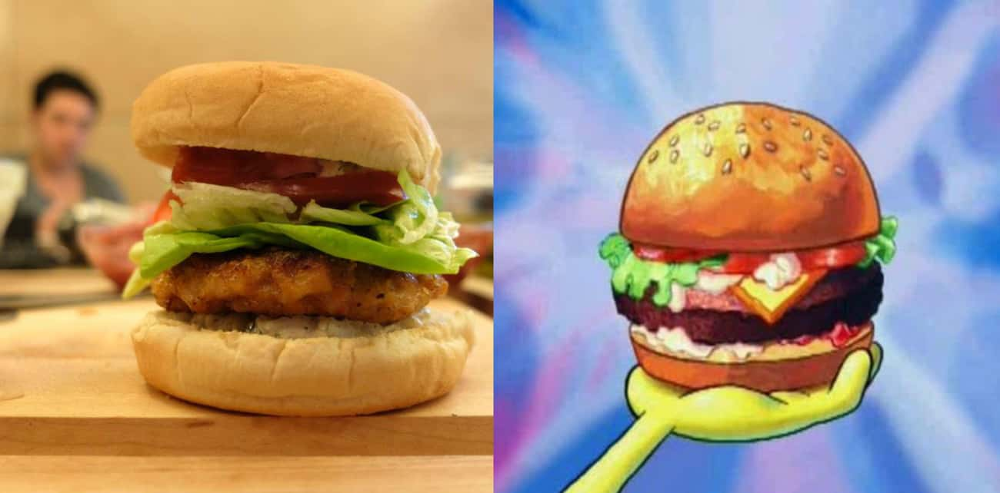

Krabby Patty from Spongebob

The Krabby Patty is the food of choice in SpongeBob SquarePants. While its secret ingredient remains an elusive mystery in the show, this recipe from Instructables ensures you can make your own Krabby Patty at home.
Ingredients
- 1 1/2 pounds of peeled, deveined shrimp
- 1 egg
- 10-12 regular-sized or smaller hamburger buns
- Lemon zest to taste
- Old Bay seasoning
- 1 tablespoon of your favorite hot sauce
- 1 teaspoon celery seed
- 1 teaspoon garlic powder
- 1 teaspoon paprika
- 1 teaspoon salt
- 1 teaspoon black pepper
- 1 teaspoon cayenne pepper
- Vegetable oil and/or butter for frying
- Butter lettuce
- Thinly sliced tomato
- Pickled onions
- Tartar sauce
- Cocktail sauce
Steps
- Place 3-4 hamburger buns in a food processor. Add the dried spices and blend into a breadcrumb mixture. Pour it out into a large bowl.
- Pulse the shrimp in the food processor until they're broken into small pieces. Add the shrimp to the bowl with the breadcrumbs, pour in the lemon zest and hot sauce, crack in an egg, and mix it all together.
- Form golf ball-sized amounts of the mixture into patties, and lay them out on parchment paper or wax paper on a sheet pan. This should make 8 patties. Once they're all formed, put them in the refrigerator for 30 minutes or the freezer for 15 minutes.
- Heat some vegetable oil in a non-stick pan. Cook the chilled patties in the oil, flipping after about 3-4 minutes. Dress the finished patties with the toppings of your choice.
HOME